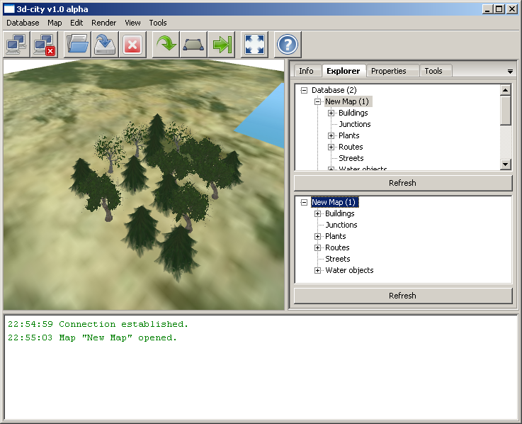
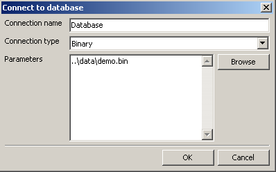
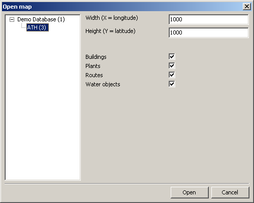
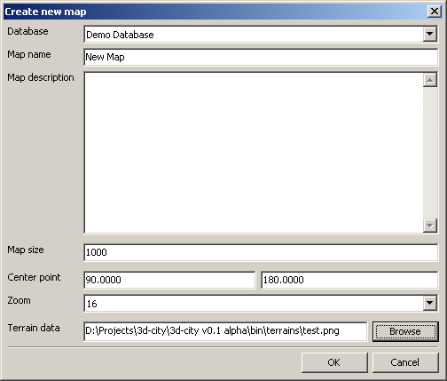
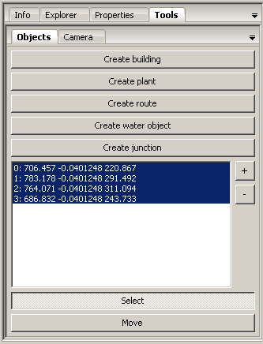
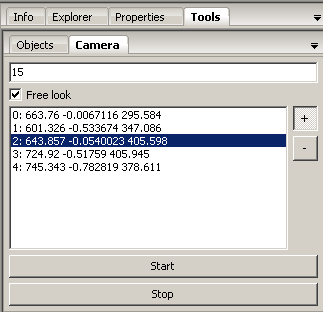

Aplikacja służy do tworzenie oraz edycji trójwymiarowych map (głównie planów miast). Dzięki systemowi wtyczek aplikacja jest niezależna od bazy danych i umożliwia pobieranie informacji z różnych źródeł m.in. baz relacyjnych, obiektowych, plików tekstowych oraz binarnych.
Powrót
Aby uruchomić aplikację należy rozpakować pobrane archiwum (np. do folderu "C:\Program Files\3d-city"), a następnie kliknąć dwukrotnie na plik 3d-city.exe znajdujący się w katalogu "C:\Program Files\3d-city\bin".
Aplikacja wymaga do poprawnego działa Microsoft Visual C++ 2005 Redistributable Package (x86) oraz DirectX 9.0c.
Powrót

Główną cześć interfejsu zajmuje okno, w którym wyświetla jest mapa. Na dole widoczny jest panel wyświetlający informacje o stanie aplikacji lub aktualnie wykonywanych czynnościach. Na górze znajduje się pasek z najczęściej używanymi narzędziami. Wielokropek oznacza, że po wybraniu danego narzędzia pojawi się okno dialogowe. Kolejne narzędzia (od lewej strony):
- "Połącz z bazą danych..."
- "Odłacz od zaznaczonej bazy"
- "Otwórz mapę..."
- "Zapisz mapę"
- "Zamknij zaznaczoną mapę"
- "Kursor (wyłącz aktywne narzędzie)"
- "Zaznacz obiekt"
- "Przesuń zaznaczony obiekt"
- "Pełny ekran"
- "Uruchom pomoc"
Po prawej stronie znajduje się panel z narzędziami:
- "Info" - wyświetla informacje o zaznaczonej mapie lub obiekcie.
- "Explorer" - umożliwia pogląd struktury bazy.
- "Properties" - pozwala na edycję własności zaznaczonego obiektu lub mapy.
- "Tools" - zawiera narzędzia umożliwiające edycję mapy.
Powrót
Aby połączyć się bazą (źródłem) danych należy:
- Z menu "Database" wybrać opcję "Connect...". Pojawi się okno dialogowe "Connect to database".
- Wpisać nazwę, pod którą bazą będzie dostępna w programie (np. "Demo Database").
- Z listy rozwijalnej wybrać rodzaj połączenia (np. Binary).
- Uzupełnić dane wymagane do nawiązania połączenia lub otwarcia pliku. Dane zależą od rodzaju wybranego połączenia (np. ścieżka do pliku w przypadku plików binarnych lub odpowiedni connection string w przypadku "ODBC").
- Nacisnąć przycisk "OK". Aplikacja rozpocznie nawiązywanie połączenia, w przypadku sukcesu zawartość bazy zostanie skopiowana do pamięci aplikacji. Struktura bazy (list map oraz obiektów) pojawi się w zakładce "Explorer" widocznej po prawej stronie. W przypadku pozostawienia domyślnych wartości aplikacja załaduje mapę z testowej bazy dołączonej do aplikacji.

Powrót
Aby otworzyć mapę należy:
- Z menu "Map" wybrać opcję "Open...". Pojawi się okno dialogowe "Open map".
- Z listy widocznej po lewej stronie wybrać jedną lub kilka map, które chcemy otworzyć.
- Wpisać szerokość oraz wysokość mapy lub pozostawić domyślne wartości.
- Wybrać rodzaje obiektów, które mają zostać załadowane wraz z mapą lub pozostawić domyślne wartości.
- Nacisnąć przycisk "OK".

Powrót
Aby utworzyć nową mapę należy:
- Z menu "Map" wybrać opcję "Open...". Pojawi się okno dialogowe "Open map".
- Z listy widocznej po lewej stronie wybrać jedną lub kilka map, które chcemy otworzyć.
- Wpisać szerokość oraz wysokość mapy lub pozostawić domyślne wartości.
- Wybrać rodzaje obiektów, które mają zostać załadowane wraz z mapą lub pozostawić domyślne wartości.

Powrót

Powrót

Powrót
W przypadku problemów z działaniem aplikacji zaleca się:
W razie dalszych problomów należy skontaktować się z autorem aplikacji.
Powrót
Informacje o błędach, sugestie oraz pytania odnośnie aplikacje proszę nadsylać na adres e-mail.
Powrót
Kolejne wersje aplikacji będą umożliwiały:
- tworzenie map o nieograniczonym rozmiarze,
- definiowanie własnych typów obiektów,
- tworzenie makr przy pomocy wbudowanego języka skryptowego.
Powrót